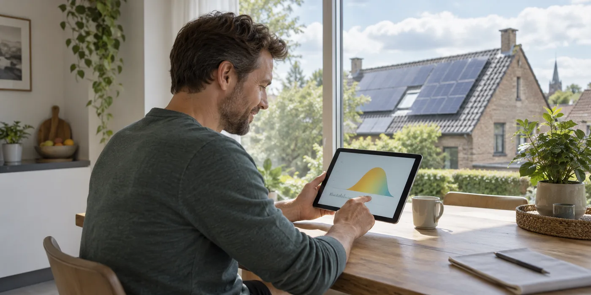
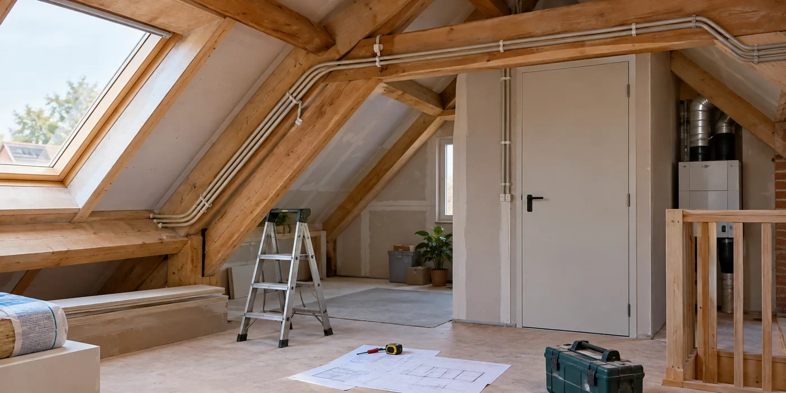
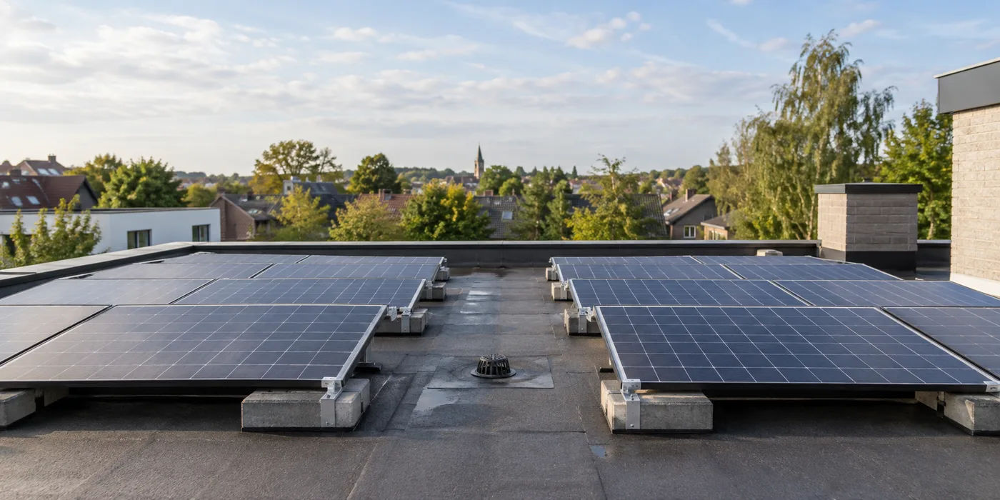
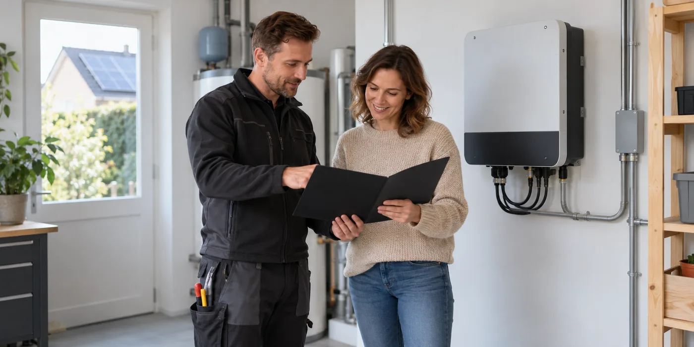
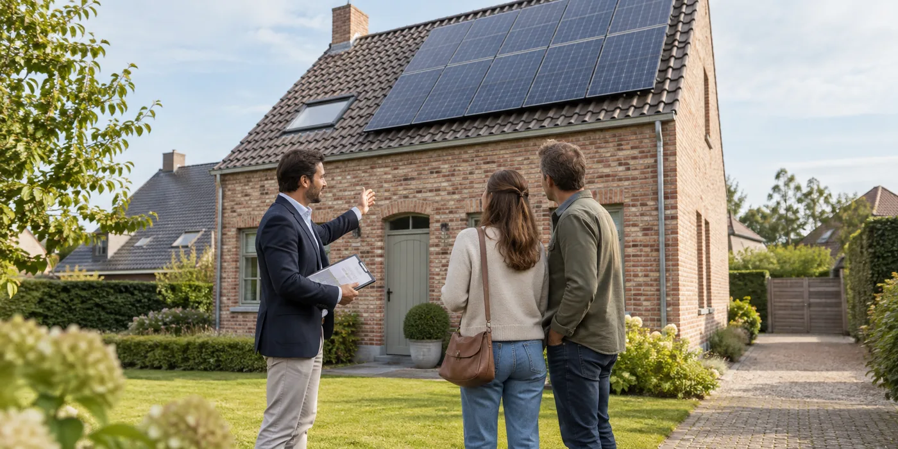

Eerst het dak vernieuwen of eerst zonnepanelen leggen?
Je dak lijkt bruikbaar en zonnepanelen staan op je verlanglijst.
Lees de gidsDuurzaam wonen / Zonnepanelen
Vijf korte gidsen en vijf verdiepende artikels om jouw project beter te begrijpen en voor te bereiden.
Naar de zonnepanelencalculator →Je dak lijkt bruikbaar en zonnepanelen staan op je verlanglijst.
Lees de gidsTwee voorstellen kunnen dezelfde panelen tonen en toch een andere besparing beloven.
Lees de gidsBij een defecte of verouderde omvormer ligt een snelle vervanging voor de hand.
Lees de gids
Een app met een mooie productiegrafiek is handig, maar een losse screenshot vertelt weinig.
Lees de gids
Als muren, dak of technische ruimte toch open zijn, kun je toekomstige zonnepanelen meenemen in het overleg.
Lees de gids
Een legplan dat elk beschikbaar stukje dak vult, ziet er efficiënt uit.
Lees de gids
Je panelen produceren stroom en de installateur vertrekt.
Lees de gids
Bij een woningbezoek vallen zonnepanelen meteen op.
Lees de gidsEen gemeenschappelijk dak biedt kansen, maar het project begint niet bij het aantal panelen.
Lees de gidsEen offerte noemt een systeem soms batterij-ready of klaar voor een laadpaal.
Lees de gids